最难忘的旅行——甘肃
张掖丹霞
张掖丹霞地貌位于甘肃省河西走廊中段的张掖市，古为河西四郡之一的张掖郡，取“断匈奴之臂，张中国之掖（腋）”之意。
张掖丹霞地貌在方圆五十平方公里山地丘陵地带，有造型奇特，色彩斑斓，气势磅礴的丹霞地貌。张掖，在中国第二大内陆河黑河的滋润下，孕育了广袤的额绿洲，方才孕育了河西走廊文化。
这次个甘肃之旅，我们去了张掖国家地质公园，张掖国家地质公园地处祁连山北麓，是中国丹霞地貌发育最大最好、地貌造型最丰富的的地区之一，是中国彩色丹霞和窗棂妆式宫殿式丹霞的典型代表。
张掖丹霞地貌面积达536平方公里以上，是我国干旱地区最典型和面积最大的丹霞地貌景观。
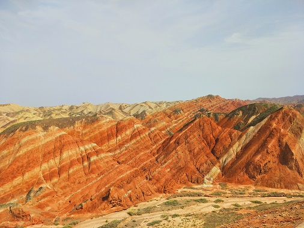
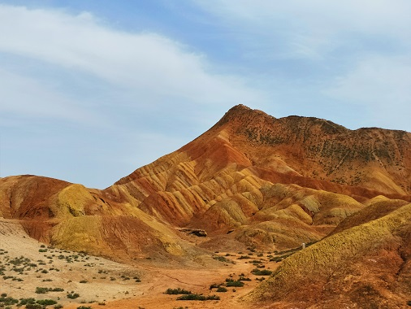
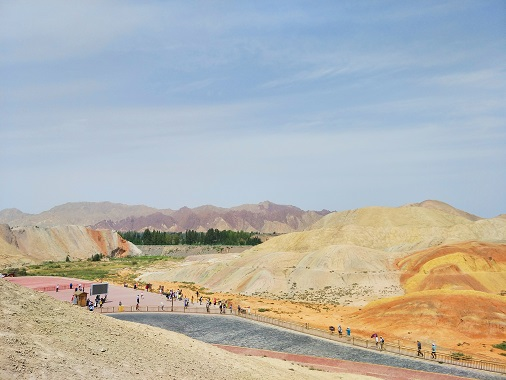
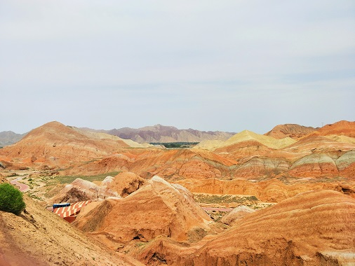
鸣沙山月牙泉
鸣沙山月牙泉风景名胜区，主要景点有月牙泉、鸣沙山。鸣沙山为流沙积成，分红、黄、绿、白、黑五色。 鸣沙山以沙动成响而得名。东汉称沙角山，俗名神沙山，晋代始称鸣沙山，其山东西长40余公里，南北宽约20公里，主峰海拔1715米。峰恋危峭，山脊如刃，经缩复初；人乘沙流，有鼓角之声，轻若丝竹，重若雷鸣，此即“沙岭晴鸣”。 月牙泉处于鸣沙山环抱之中，其形酷似一弯新月而得名。古称沙井，又名药泉，一度讹传渥洼池，清代正名月牙泉。数千年来沙山环泉，泉映沙山，在沙山深谷中，“风夹沙而飞响，泉映月而无尘”。月牙泉有四奇：月牙之形千古如旧，恶境之地清流成泉，沙山之中不淹于沙，古潭老鱼食之不老
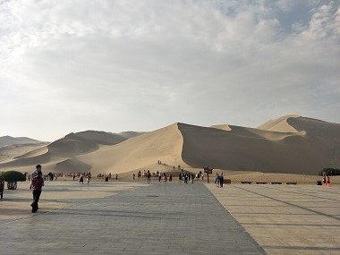
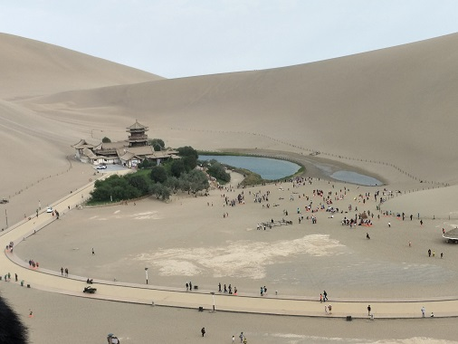
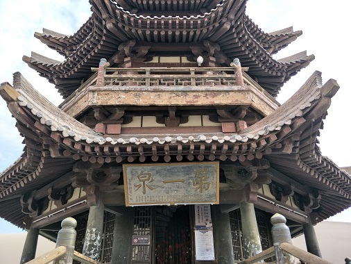
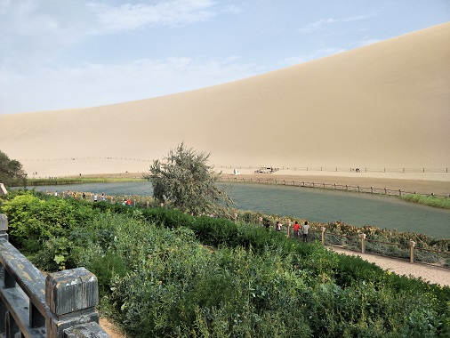
 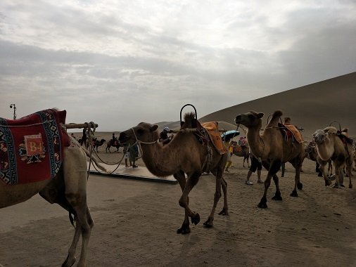
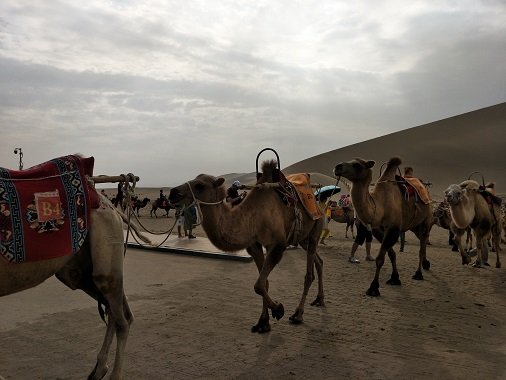
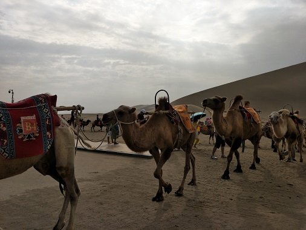